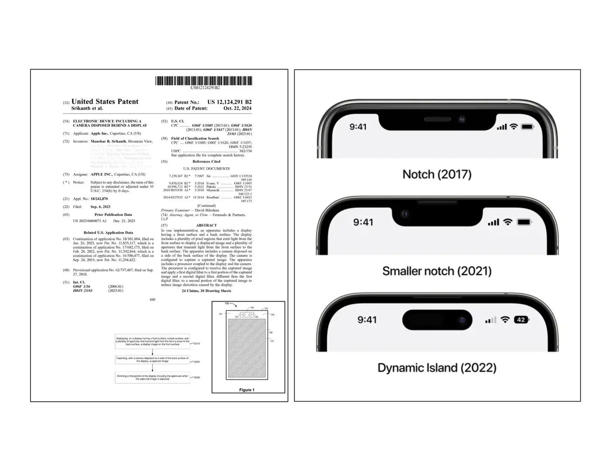
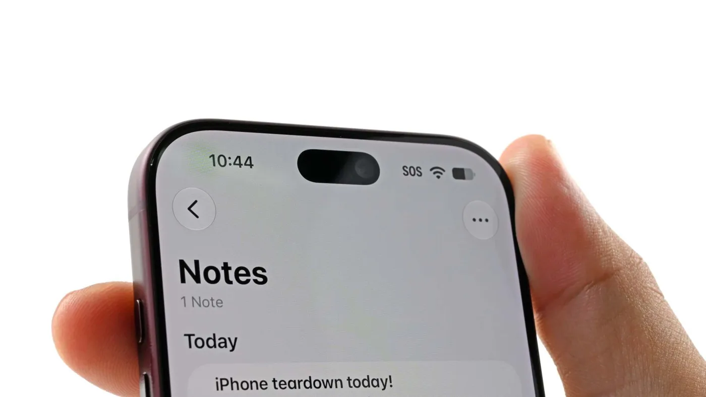

I invented the disappearing camera.
Eleven years in the making — from my 2015 notebooks to flagships in the fall of 2026. The iPhone Duo hides its FaceTime camera completely beneath the display; the iPhone 18 Pro Max moved its Face ID infrared camera beneath the OLED.
Precision: on the 18 Pro Max, only the Face ID infrared camera went beneath the OLED — the selfie camera and dot projector stayed in the opening. Only the Duo’s inner display hides a camera completely.
I put it on paper long before it shipped.

My under-display camera architecture. Granted 2024; priority 2018.
Look closer
Can you find the camera?
Two phones, two disappearing acts. The iPhone Duo hides its color FaceTime camera entirely beneath the inner display — no notch, no island, unbroken glass. The iPhone 18 Pro Max moves its Face ID infrared camera beneath the OLED — the teardown iFixit photographed here — leaving a smaller Dynamic Island.

Images: iFixit
Why it matters
Beauty worth engineering for.
The best display is the one you never notice. On the Duo: no cutout splitting your video, no notch intruding on the frame — unbroken glass, edge to edge. On the 18 Pro Max: the island, smaller. But a display is opaque by nature. To make it disappear around a camera took real invention: the display had to learn to yield where the lens sees, and the camera had to learn to see through the display.
No notch. No island.
On the iPhone Duo, your photos, your video, your FaceTime calls — filling the whole glass, with nothing between you and them.
The display gives way.
Above the lens, the display thins into an engineered opening — pixel rows yield, density transitions around the edge.
The camera looks through.
Light reaching the sensor carries the display’s fingerprint; computational restoration reconstructs the image pixel by pixel.
Invention of the Disappearing Camera
The False Compromise
For a decade, mobile hardware was trapped by a false compromise. We spend 99% of our time looking at our screens, and less than 1% of our time looking into the front-facing camera. Yet, that 1% dictated the entire hardware architecture. It demanded a bezel. Then a notch. Then a cutout. We were permanently breaking the primary consumer experience to accommodate a secondary use case.
Incremental engineering shrinks the cutout. Zero-to-one architecture removes it entirely.
In 2015, I stopped asking how to hide the camera around the screen, and started asking how to make the display unbroken. The answer was counterintuitive: force the display and the sensor to occupy the exact same physical space.
The invention
Eleven years in the making.
I conceived the foundational under-display-camera architecture — first-listed of six inventors on the patent — an 11-year arc from my notebooks in the summer of 2015 to the fall of 2026, when the disappearing camera reached flagship phones. The family claims priority to September 27, 2018 — two years before the first commercial under-display-camera phone — and was filed September 24, 2019.
The Cost of Zero-to-One
When I first proposed this architecture, I was told it was impossible. The objection was a reasonable one: an active display exacts a brutal optical penalty, and the consensus held that no computation could repay it. But zero-to-one invention is rarely just a contest with physics — it is a contest with consensus.
For the first year, I carried it largely alone. The resistance was never personal; it was architectural. Then a select few individuals believed in me and supported me in carrying it forward.
To win that battle, I didn't rely on industry trends — I went back to first principles. I cannot count the thousands of times I returned to my notes from MIT’s 2.710 Optics class. The proof that we could control the distortion was hiding in the fundamental math of diffraction, deconvolution, and lens behavior.
Turning a doubted whiteboard concept into a shipping reality took a decade of unyielding work — proving, step by step, that silicon and computational deconvolution could stand in for the glass the display couldn’t spare. I took that challenge personally. Today, the disappearing camera ships in flagships.
- 2015June–July 2015 — my notes and a first prototype: a camera hidden entirely behind the display.
- 2016“I built a camera that vanished behind the screen — before the world knew it was possible.”
- 2018Provisional patent filed, September 27 — protecting the 2015 invention. Two years before the first commercial under-display-camera phone, the ZTE Axon 20 (September 2020).
- 2022Patent granted, April 5: “Electronic device including a camera disposed behind a display.”
- 2026Fall 2026 — flagships ship the disappearing camera: the iPhone Duo (October 23) hides its FaceTime camera entirely beneath the inner display; the iPhone 18 Pro Max (September 18) moves its Face ID infrared camera beneath the OLED.
The screen is whole.
Foresight is pattern, not luck: in 2014, as a Senior Researcher at Nokia, I co-invented a multi-camera bokeh architecture (WO2016097470A1, priority December 15, 2014, with Ting-Chun Wang) — two years before Portrait mode arrived on the iPhone 7 Plus. At Pelican Imaging, I was first-listed inventor on the depth-regularization patent (WO2015134996A1, priority March 7, 2014).
How it works
Light finds a way.
Three ideas, one invisible camera. The iFixit teardown confirmed the hardware half; the patent describes the whole architecture.
The display opens.
Display pixels above the camera are thinned into an opening — iFixit found every other row absent, density transitioning around the edge.
Infrared passes through.
An IR-pass layer beneath the OLED admits infrared and blocks visible light — the “eclipse” iFixit photographed under the microscope.
Software completes the image.
Spatially-varying computational restoration, tuned with PSF-derived filters, reconstructs what the display took from the light.
“Electronic device including a camera disposed behind a display.” Manohar B. Srikanth, first-listed of six inventors · assignee Apple Inc. · provisional priority Sep 27, 2018 · filed Sep 24, 2019 · granted Apr 5, 2022. Family continues: US 11,592,864 → US 11,853,117 → US 12,124,291.
Cited by the field
27 later publications — 21 U.S., 6 international — from 13 companies and research institutions cite this family as prior art:
- Samsung Display · 6US 11,893,944 B2 · US 11,672,143 B2 · US 12,008,967 B2 · US 11,670,243 B2 · US 2021/0056913 A1 · US 2021/0143371 A1
- Google · 4US 11,687,126 B2 · US 11,994,920 B2 · US 2022/0187878 A1 · US 2023/0341908 A1
- AUMOVIO Germany · 3EP 4,571,405 B1 · EP 4,571,403 B1 · EP 4,571,404 B1
- Samsung Electronics · 2US 11,460,894 B2 · US 2022/0206545 A1
- Sony Semiconductor Solutions · 2US 12,069,875 B2 · US 2023/0026442 A1
- Microsoft · 2US 12,165,063 B2 · US 2024/0160922 A1
- Himax Technologies · 2US 12,131,510 B2 · US 2023/0098230 A1
- Qualcomm · 1WO 2021/092887 A1
- LG Display · 1KR 2022/0090859 A
- Leica Camera · 1US 2024/0087198 A1
- Fraunhofer-Gesellschaft · 1US 12,380,665 B2
- Megvii · 1US 2023/0230204 A1
- Continental Automotive · 1EP 4,571,406 A1
Citations are prior-art references recorded by patent offices — not licenses or endorsements.
Precision: on the iPhone 18 Pro Max, only the Face ID infrared camera moved beneath the OLED — the selfie camera and IR dot projector stayed in the central opening. The iPhone Duo’s hidden FaceTime camera sits beneath the inner display.
What comes next
Software-defined sensing.
The disappearing camera was never the point. It was the first proof of a larger thesis: hardware whose capabilities are written in computation, not etched in glass.
A camera that sees through a display. Eye tracking with no camera at all. Photodiodes woven into the screen itself — my recent filings trace exactly this arc, from the under-display camera to camera-less gaze sensing. The next decade of devices won’t be defined by the sensors they carry, but by the sensing that software lets them borrow. The screen is whole; the sensor is next.
There’s more to the story.
The teardown that proves it. The career that made it possible. The person behind the patents.
Read the full story